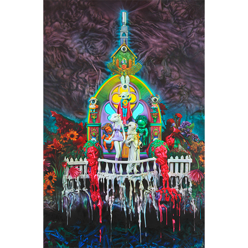
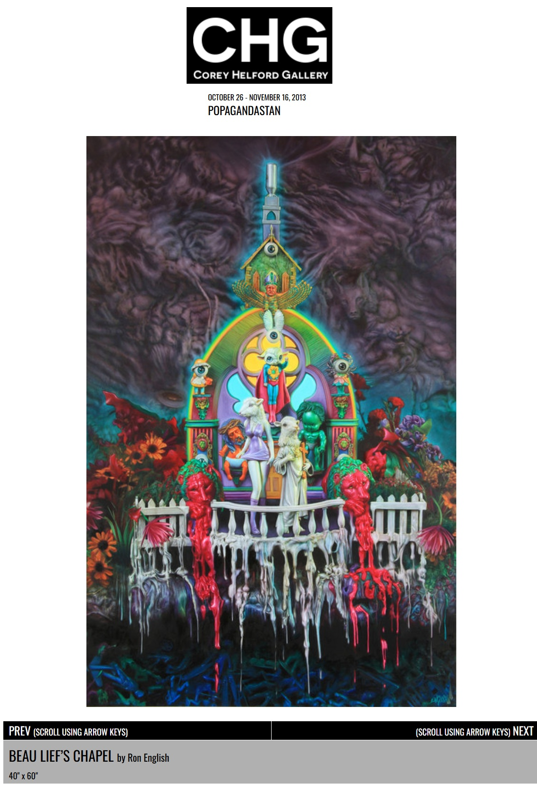

Exhibitions
POPAGANDASTAN – New Works from Ron English, Corey Helford Gallery, Los Angeles, California, US, October 26–November 16, 2013.
Living in Delusionville, Mesa Contemporary Arts Museum, Mesa Arts Center, Mesa, Arizona, US, September 9, 2022–January 22, 2023.
Literature
Ron English, Death and the Eternal Forever (Korero Press, 2014), p. 74. ISBN 978-0957664920.
Ron English, Status Factory: The Art of Ron English (San Francisco: Last Gasp of San Francisco, 2014), p. 191. ISBN 978-0867197891.
Ron English, Original Grin: The Art of Ron English (Paris: Cernunnos, 2019), p. 248. ISBN 978-2374950938.
Notes
This work appears on Corey Helford Gallery’s artwork page for the exhibition POPAGANDASTAN – New Works from Ron English, available here, accessed April 8, 2026.

Ancillary Documentation
